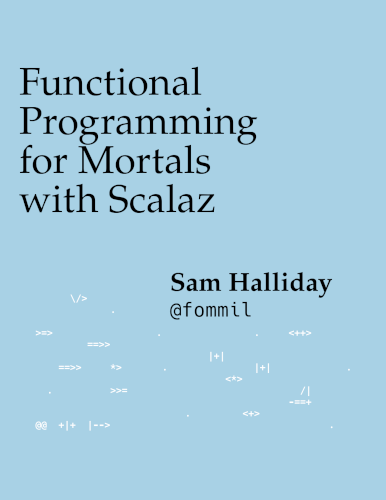

Sam Halliday
Scala Love 2022
http://leanpub.com/fpmortals
disneytech.comsam.halliday@disneystreaming.comcase class — productssealed trait — coproductsobject, Int, String (etc) — valuessealed trait Geometry
case class Point(vs: (Double, Double)) extends Geometry
case class MultiPoint(vs: List[(Double, Double)]) extends Geometry
case class LineString(vs: List[(Double, Double)]) extends Geometry
case class MultiLineString(vs: List[List[(Double, Double)]]) extends Geometry
case class Polygon(vs: List[List[(Double, Double)]]) extends Geometry
case class MultiPolygon(vs: List[List[List[(Double, Double)]]]) extends Geometry
case class GeometryCollection(geometries: List[Geometry]) extends Geometry
sealed trait GeoJSON
case class Feature(props: Map[String, String], geo: Geometry) extends GeoJSON
case class FeatureCollection(features: List[GeoJSON]) extends GeoJSONgitlab.com/fommil/shapelyAlign Covariant 🗲 Decide ContravariantAnyValcase classsealed traitimplicit val decide: Decide[Ordering] = new Decide[Ordering] {
def decide[A, B](fa: Ordering[A], fb: Ordering[B]) = new Ordering[Either[A, B]] {
def compare(x: Either[A, B], y: Either[A, B]): Int = (x, y) match {
case (Left(xa), Left(ya)) => fa.compare(xa, ya)
case (Right(xb), Right(yb)) => fb.compare(xb, yb)
case (Left(_), Right(_)) => -1
case (Right(_), Left(_)) => 1
}
}
}trait Equal[A] {
// type parameter is in contravariant (parameter) position
def equal(a1: A, a2: A): Boolean
}Equalimplicit val decide: Decide[Equal] = new Decide[Equal] {
def decide[A, B](fa: Equal[A], fb: Equal[B]) = new Equal[Either[A, B]] {
override def equal(ab1: Either[A, B], ab2: Either[A, B]) = (ab1, ab2) match {
case (Left(a1), Left(a2)) => fa.equal(a1, a2)
case (Right(b1), Right(b2)) => fb.equal(b1, b2)
case _ => false
}
}
}Defaultimplicit val align: Align[Default] = new Align[Default] {
override def align[A, B](fa: Default[A], fb: Default[B]) = new Default[(A, B)] {
override def default = (fa.default, fb.default) match {
case (Right(a), Right(b)) => Right((a, b))
case (Left(err), _) => Left(err)
case (_, Left(err)) => Left(err)
}
}
}SemigroupDecide ?Semigroup doesn't (typically) work for sealed traitDecide would produce broken instances!Enumproject/ExamplesCodeGen.scalaval enums = (1 to sum_arity).map { i =>
val tparams = (1 to i).map(p => s"A$p <: A").mkString(", ")
val tparams_ = (1 to i).map(p => s"A$p").mkString(", ")
val implicits = (1 to i).map(p => s"A$p: ValueOf[A$p]").mkString(", ")
val tycons = s"SealedTrait$i[A, $tparams_]"
val work = (1 to i).map { p => s"_$p(A$p.value)" }.mkString("", " :: ", " :: Nil")
s""" implicit def sealedtrait$i[A, $tparams](implicit $implicits) = new Enum[$tycons] {
| def values: List[$tycons] = $work
| }""".stripMargin
}
s"""package wheels.enums
|
|import shapely._
|
|private[enums] trait GeneratedEnums {
|${enums.mkString("\n\n")}
|}""".stripMarginMetaobject ATree {
implicit lazy val equal: Equal[ATree] = {
implicit def leaf: Equal[Leaf] = Equal.derived
implicit def branch: Equal[Branch] = Equal.derived
Equal.derived
}
}derives breaks too, be carefulLazyThank you for listening.
Let's move to the Q&A room.
disneytech.com
sam.halliday@disneystreaming.com